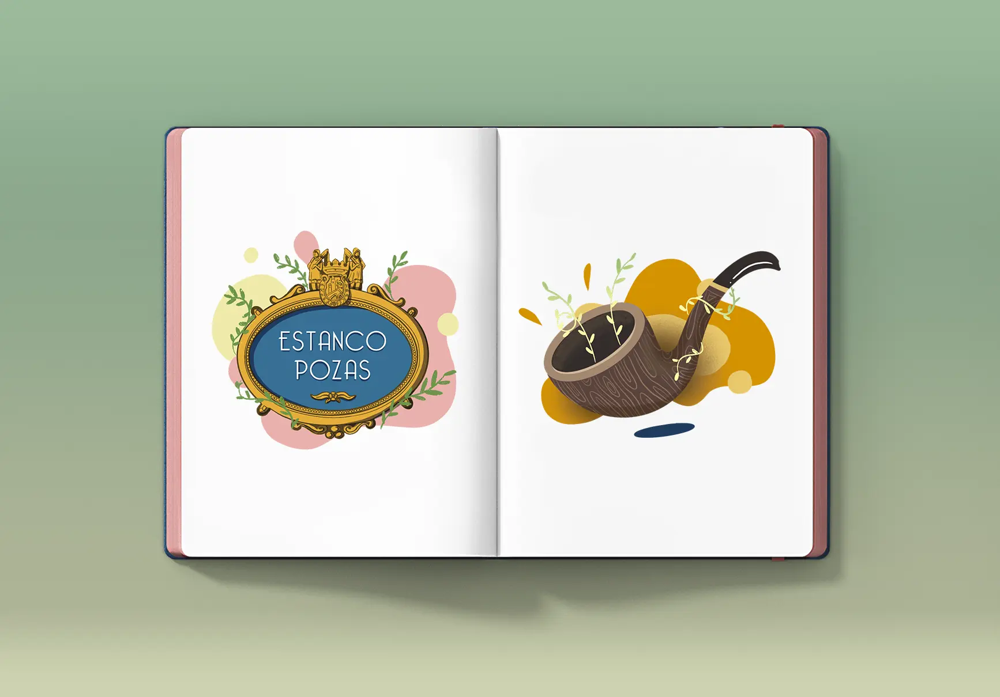
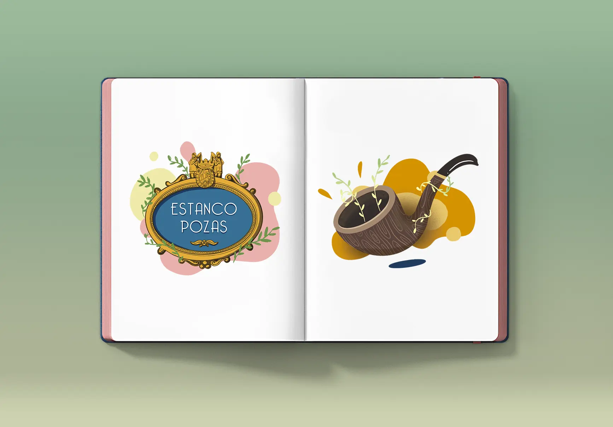
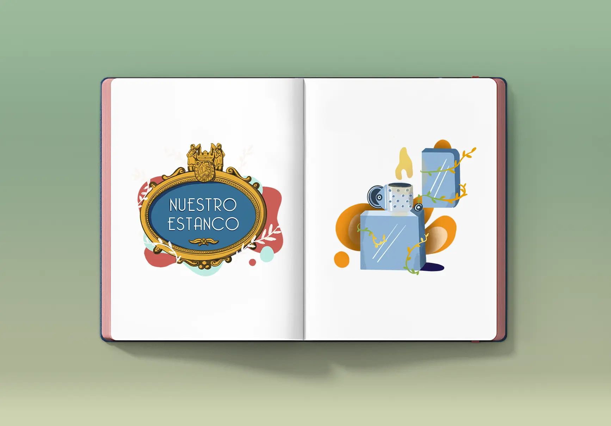
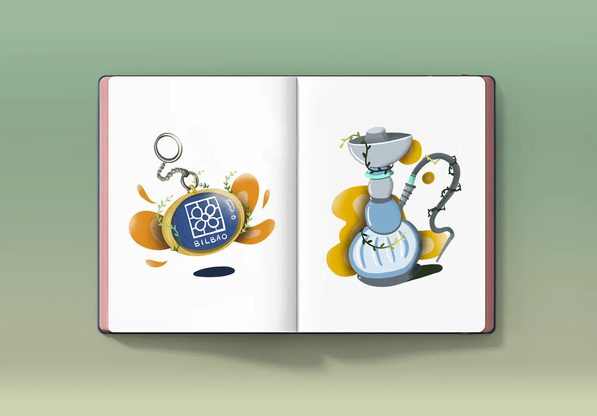
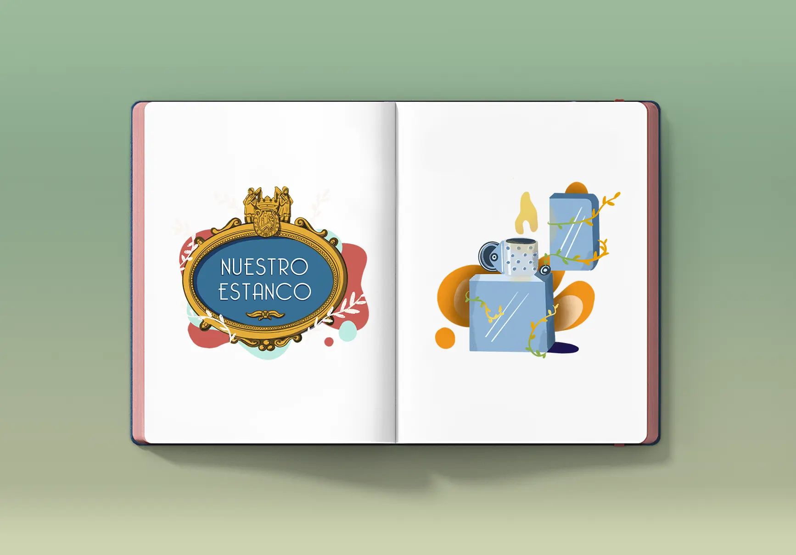
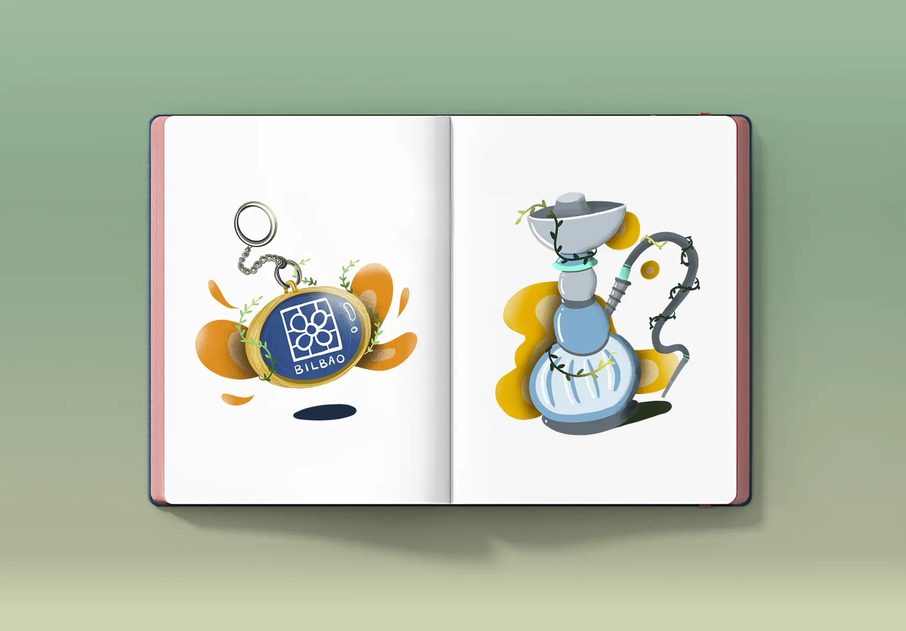

Estanco Pozas
Hay calles embláticas en Bilbao como lo es Licenciado Pozas y hay establecimientos emblemáticos dentro de ella como lo es su estanco. Después de haber sido regentado por 4 generaciones de mujeres renueva su marca en 2019. Junto a una versión más moderna de su logo y sus tarjetas, realicé varias ilustraciones para su web. Con un toque natural y desenfadado como lo es su dueña, ilustré varias placas de las calles de Bilbao y una serie de productos de fumador para encabezar sus páginas de muestra principales.
 

 


